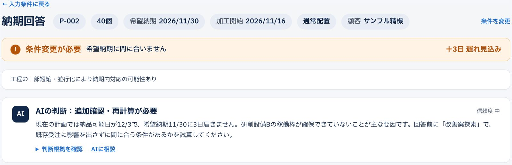
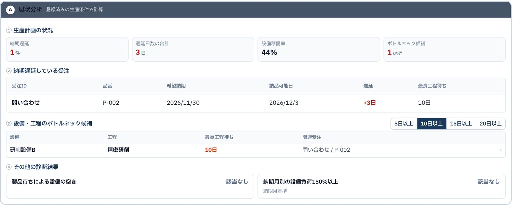
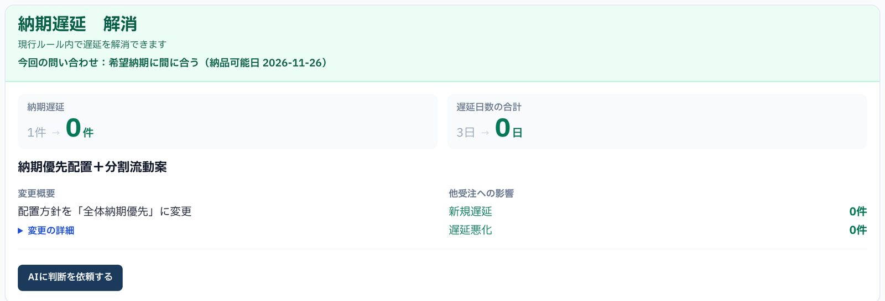
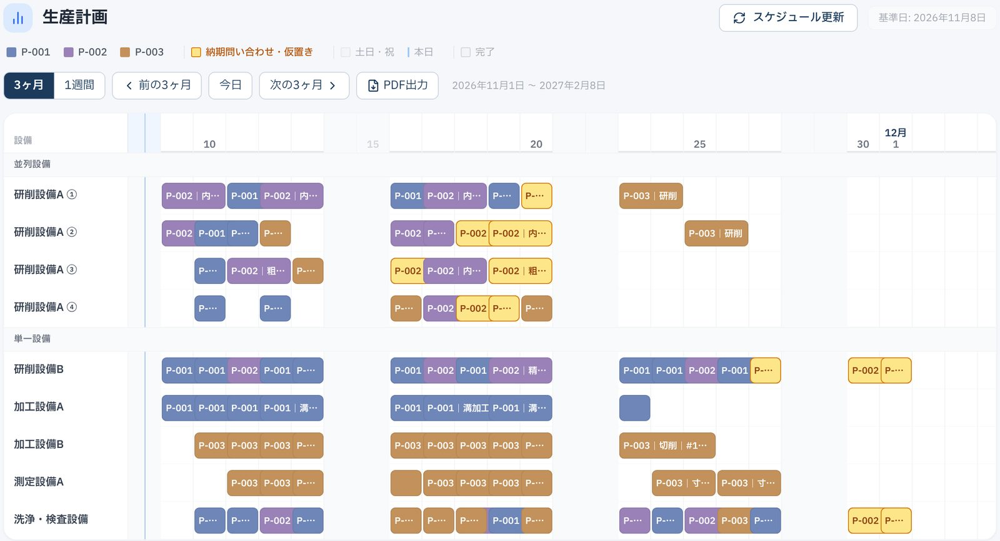

現場確認後に回答
顧客を待たせる
顧客を待たせる
現場の負担が増える
遅れる場合の対策まで
実際の製品画面です（クリックで拡大）。
対応可能日を計算し、判断根拠を確認できます。

原因を特定し、改善案を試算・比較。他の受注への影響も確認できます。


設備負荷と生産計画を見える化し、関係者の確認・調整を減らします。

※ 画面は合成データ
日付はエンジンが計算。同じ条件なら同じ答えです。
今のExcel・システムのまま始められます。
はい。受注・工程・設備のExcelから始められます。
範囲とデータの状態に応じて、個別にお見積もりします。
無料デモ・30分のオンライン相談を受付中。